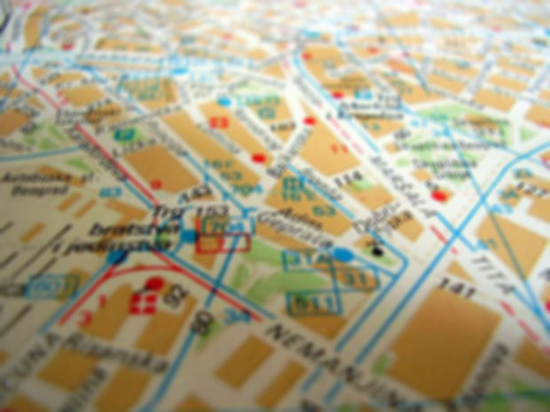
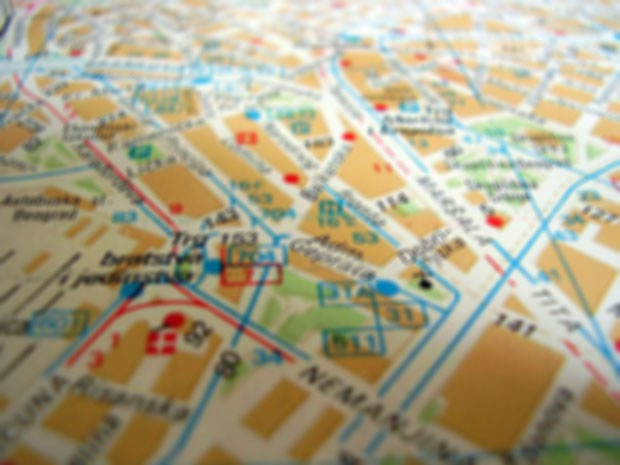

Foodie's Guide to UST
by MikhaellaRivera


 

Mang Tootz Food House
Mang Tootz is one of the most famous food stops in UST. It specializes in home-cooked meals which are very affordable. The food here is around 60-80 pesos, making the place inviting for students. It has been featured in a lot of newspapers and blogs. Their most famous dish is a sweet fried banana topped with sesame seeds and cinnamon sugar (Banana Rum-ah).
Rap Rap's Eatery
Rap Rap's and it's branch Rap Rap's 2 specializes in affordable home-cooked meals. For 47 pesos you get 2 viands and rice. This is where you can barkada's hanging out and sharing a pitcher of juice. This the carinderia of choice for dormers because it is located in a residential area.
Ilar's Kitchenette
You can find anything sizzling here! However, they're tapa tips and lechon kawali are must-trys! You definitely get the value for your money. Just the smell of the food can take you to heaven!
Love Lite
Popular breakfast choices like bacon, ham and egg can be found here but you can also buy food like liempo and siomai. The price of the food here ranges from 30-80 pesos. You can also purchase fruit shakes and milktea here.
Pong's Ihaw Ihaw
They specialize in seafood. The seafood here are freshly imported from Dagupan. The sinigag na bangus taste fresh and the texture of the fish is very nice. Although it is quite far from UST but the price of the food here ranges from 60-80 pesos and the food taste great so the long walk is worth it!
Egoy
This is a newcomer in the UST food scene. This place specializes in sizzling. The gravy is to die for and the teriyaki sauce is simply heaven. The ambiance of this place is very romantic specially at night or when it's raining. This is due to the openness of the place plus the fact that the tables are located at the second floor.
Lopez Canteen
One of the classic food stops in UST. This little canteen has been feeding the hungry students of UST for 50 years! Their most famous palabok is simply heaven! The food here costs less than 100 pesos. Tipid ka na! Busog ka pa!
Darling Carmen Canteen
This place is famous for their inihaw. Cheap and delicious meals can be availed here and it is served with a sundae. For 100 pesos per meal, you definitely get the value for your money.
McDonald's
The McDonald's Corporation is the world's largest chain of hamburger fast food restaurants, serving around 68 million customers daily in 119 countries across 35,000 outlets. McDonald's primarily sells hamburgers, cheeseburgers, chicken, french fries, breakfast items, soft drinks, milkshakes, and desserts. In response to changing consumer tastes, the company has expanded its menu to include salads, fish, wraps, smoothies, fruit, and seasoned fries.(Wikipedia)
BonChon
Bonchon Chicken is a South Korean-based fried chicken franchise restaurant. Bonchon is a Korean word meaning "My Hometown". The first Bonchon Chicken restaurant opened in 2002 in Busan, Korea. The first location in the USA was in Leonia, New Jersey. It later spread to California, New York, Maryland, Massachusetts, Virginia and Texas. There are 10 locations in South Korea, 59 in the Philippines, 4 in Thailand, and 6 in Indonesia. There are also many new locations pending in different countries and Brunei is one of them.(Wikipedia)
Jollibee
Jollibee Foods Corporation abbreviated as JFC and popularly known as Jollibee (PSE: JFC) is a Philippine multinational chain of fast food restaurants headquartered in Pasig City, Philippines. JFC is the parent company of Jollibee, the country's answer to McDonald's in the fast food burger business.(Wikipedia)
Goldilocks
Goldilocks Bakeshop is a bakeshop chain based in the Philippines, which produces and distributes Philippine cakes and pastries. The chain was named after Goldilocks, a character from the fairy tale Goldilocks and the Three Bears. The Bakeshop's main products include cakes, breads, sweets, and pastries. Some branches incorporate a Foodshop, offering Philippine cuisine, including beef, chicken, pork, seafood and vegetable dishes as well as their Thirst Quenchers, such as halo-halo, gulaman, fruit salad and sago.(Wikipedia)
Reyes Barbecue
Their barbecue came from four generations of perfecting barbecue by a cooking clan whose past time is to discuss and create the best food preparations. The clan pioneered the best food combination majority of Manilans grew up with- the Barbecue with Java Rice served with the famous Peanut Sauce and Atchara on the side. The smell of what's cooking on our grill will bring you in, and we leave the rest to your eating.(reyesbarbecue.com)
Greenwich
Greenwich Pizza is a top pizza and pasta chain in the Philippines. Greenwich started as an over-the-counter pizza store in the Greenhills Shopping Center in Metro Manila in 1971.(Wikipedia)
KFC
KFC (the name was originally an initialism for Kentucky Fried Chicken) is a fast food restaurant chain that specializes in fried chicken and is headquartered in Louisville, Kentucky, in the United States. It is the world's second largest restaurant chain (as measured by sales) after McDonald's, with 18,875 outlets in 118 countries and territories as of December 2013. KFC's original product is pressure fried chicken pieces, seasoned with Sanders' recipe of 11 herbs and spices. The constituents of the recipe represent a notable trade secret(Wikipedia)
Yellow Cab
Yellow Cab Pizza Company is a chain that retails fast food, primarily pizza. In 2001, Yellow Cab PIzza Company was founded by Eric Puno, Henry Lee, and Albert Tan. The chain operates in the Philippines, the United States, Guam, Malaysia and Qatar. While much of the ingredients to their pizzas come from the Philippines, the cheese is purchased from either Australia or New Zealand. The company's delivery service uses Vespa scooters.(Wikipedia)
Cafe UK
Cafe UK is a newcomer in the food stop scene in UST. They offer a variety of caffeinated drinks, shakes, cakes, pastries and pastas. This is also an ideal place for students to study. One of the most popular feature is the Ipad on the each of the tables in the cafe. The place looks like a posh cafe in England, specifically London hence, the name Cafe UK.
Starbucks
Starbucks locations serve hot and cold beverages, whole-bean coffee, microground instant coffee, full-leaf teas, pastries, and snacks. Most stores also sell pre-packaged food items, hot and cold sandwiches, and items such as mugs and tumblers. Starbucks Evenings locations also offer a variety of beers, wines, and appetizers after 4pm.(Wikipedia)
Coffee Indulgence
It is a very popular hangout place for UST students. A variety of food are available here. The most popular item here is the frappe.
Beanleaf
It is a coffee shop and milk tea shop combined into one. This company is evident in providing wide array of flavored milk tea, coffee and trademark beverages. Beanleaf Coffee and Tea uses imported flavorings and syrups, high quality imported leaves and the very famous aromatic coffee beans Arabica, so as to sustain the ingenuity of the formulas.(beanleaf.ph)
Krispy Kreme
Krispy Kreme Doughnuts, Inc. is an American global doughnut company and coffeehouse chain based in Winston-Salem, North Carolina. Krispy Kreme founder Vernon Rudolph bought a yeast-raised recipe from a New Orleans chef, rented a building in what is now historic Old Salem in Winston-Salem, NC, and began selling to local grocery stores.(Wikipedia)
D'Cream
This is a famous coffee and tea shop in UST. They sell a variety of coffee and teas as the name suggest. Their most famous item here is the milk tea.
Moonleaf
Moonleaf is a tea shop offering freshly-brewed tea mixed into a variety of delicious and refreshing concoctions, milk tea being the most popular. Moonleaf's tea drinks and mixes are made from freshly brewed, top-quality tea leaves imported from the best tea-growing regions of Taiwan. The tea is brewed, steeped and served in authentic Taiwanese tradition-- no machines.(moonleafteashop.com)
Simple Line
In 2008, we opened the first SimpleLife store in UST Carpark, Manila. In 2010, SimpleLife went through a corporate reorganization with the new name SimpleLine. The tea is freshly brewed everyday, and it's made by expertly trained tea mixers.(simplelinetea.com)
Mang Tootz Food House
Rap Rap's Eatery
McDonald's Lacson Branch
McDonald's P.Noval Branch
McDonald's UST-Espana Branch
Jollibee-Asturias
Jollibee-Dapitan
Cafe UK
Starbucks P.Noval
Starbucks Dapitan
Starbucks Pacific Suites
Starbucks SM San Lazaro
Ilar's Kitchenette
Love Lite
Pong's Ihaw Ihaw
Egoy
Lopez Canteen
Darling Carmen Canteen
BonChon
Goldilocks
BonChon-UST
BonChon-Dormus
Goldilocks
Reyes Barbecue-UST
Greenwich-UST
Greenwich-Morayta
KFC
Yellow Cab
Coffee Indulgence
Beanleaf
Krispy Kreme-SM San Lazaro
Krispy Kreme-UST
D'Cream
Sem1 Mikhaella Rivera 3-ITD